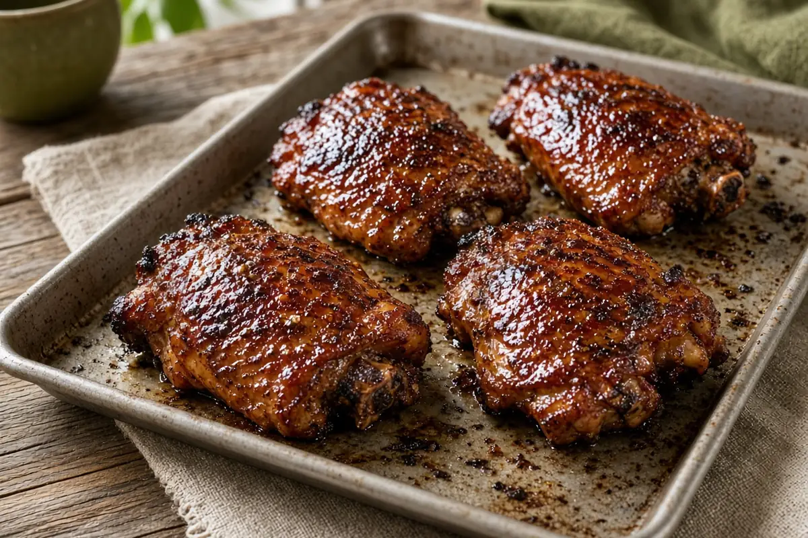

Pellet-Grilled BBQ Chicken Thighs
Bone-in thighs with a simple garlic and smoked paprika rub, cooked on the pellet grill at 350°F and finished with a sticky, set coat of barbecue sauce.

6 servings
By
Yield: 6 servings
Prep:
Cook:
Total:
Difficulty: Easy
Ingredients
- 8 to 10 bone-in, skin-on chicken thighs
- 2 to 3 Tbsp avocado or olive oil
- 3/4 to 1 cup of your favorite BBQ sauce
- 1 1/2 Tbsp kosher salt
- 1 Tbsp black pepper
- 1 Tbsp garlic powder
- 1 Tbsp smoked paprika
- 1 tsp onion powder
- 1/2 tsp cayenne, optional
Instructions
- Stir the kosher salt, black pepper, garlic powder, smoked paprika, onion powder, and cayenne together for the rub. Pat the thighs very dry, coat lightly with the oil, and season both sides generously.
- Heat the Z Grills or other pellet grill to 350°F with a mild-to-medium pellet (hickory, pecan, cherry, or a competition blend). Let the thighs sit at room temperature while it heats.
- Lay the thighs skin side up on the grates, close the lid, and cook 40 minutes, until about 165°F inside and the skin is tightening and coloring.
- Brush both sides with the BBQ sauce, close the lid, and cook 12 minutes more, until the thighs reach 175°F and the sauce is set and sticky.
- Rest the chicken 5 minutes before serving.
Notes: Boneless thighs work too and finish sooner. For more caramelization, move the thighs closer to the heat for the last few minutes. The rubbed thighs can also wait in the fridge for up to an hour.